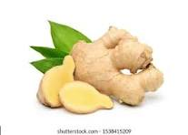
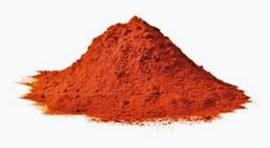

le curcuma
Le curcuma est une épice miraculeuse, très appréciée en Asie et notamment en médecine indienne. Et pour cause, elle est connue pour ses propriétés antioxydantes mais aussi pour soulager les troubles digestifs, lutter contre les maladies ou encore donner un véritable coup de boost en cas de fatigue.16 août 2022
Profil Le curcuma possède une saveur terreuse, légèrement amère et chaude. Au nez, l'épice est légèrement poivrée, avec des touches boisées et parfois lactées. Bien moins citronné et piquant que le gingembre, ses saveurs s'exhalent au cours d'une cuisson longue.

le gingembre
Le gingembre officinal (Zingiber officinale) est une espèce de plantes originaire d'Inde et de Chine du Sud ,, du genre Zingiber et de la famille des ...
Le gingembre ne se cuit pas à proprement parlé, il s'utilise comme un condiment. Le gingembre frais se râpe et s'incorpore dans un plat qui est en cours de cuisson. Son intensité de saveur dépendra de quand vous l'intégrerez au plat.1 août 2019
le paprika doux
Le paprika en poudre ou le piment doux Issu d'un piment doux séché et broyé, emblématique de la région de Zitava River, ce paprika donne un léger goût sucré et une magnifique couleur rouge à tous vos mets salés. Saupoudrez-le sur un poulet à rôtir ou des légumes à poêler.
